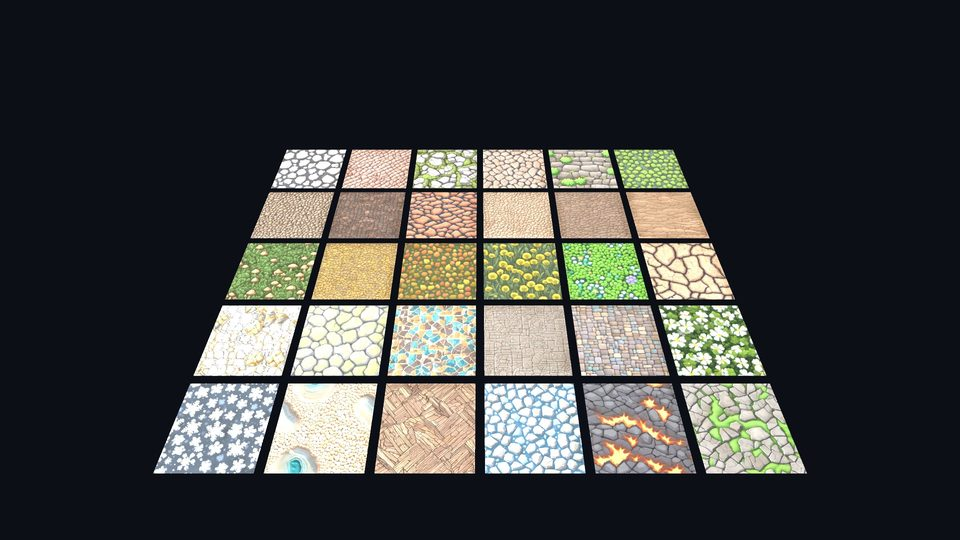
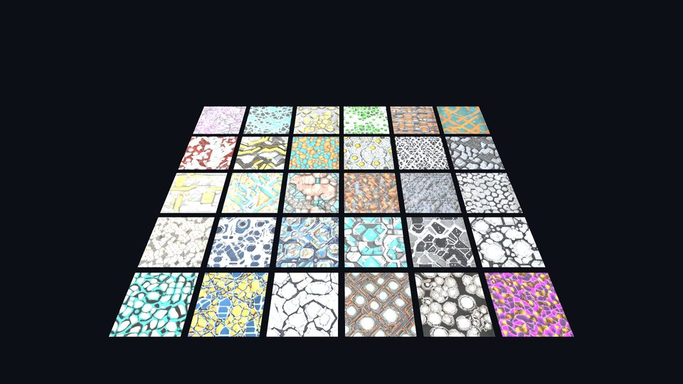
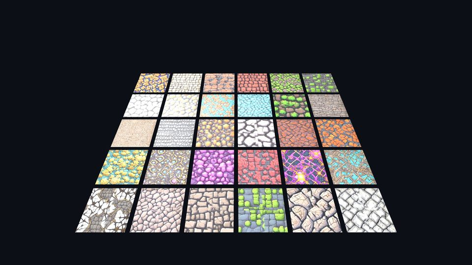
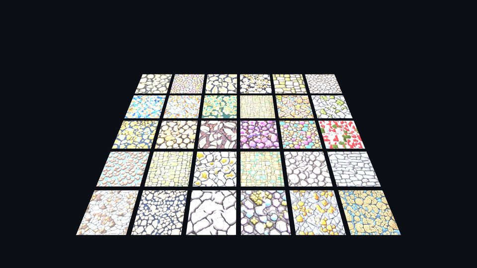

Fantasy Village Ground
30 seamless ground materials: mossy cobblestone, meadow grass, dirt roads, stone plazas and special biome floors.
Publisher
Stylized, seamless PBR material collections for game environments. Each material is prepared as tileable 2K maps for Unity, Unreal Engine, Godot and Blender, with a demo scene included in the Unity packages.

30 seamless ground materials: mossy cobblestone, meadow grass, dirt roads, stone plazas and special biome floors.

30 seamless sci-fi materials: starship panels, emissive circuit floors, metal decks, grates and hazard markings.

30 seamless dungeon materials: cracked flagstone, mossy brick, lava obsidian, frozen caves and dark iron plates.

30 seamless light-stone materials: pale flagstone, limestone, marble and sunlit slabs with moss and lichen in the joints.
Albedo base textures were generated locally using Stable Diffusion XL (commercial license) in ComfyUI. All generated outputs were curated, seam-repaired (inpainting and edge matching for seamless tiling), upscaled to 2048x2048, and processed with procedurally derived PBR maps (Height, Sobel Normals, Roughness, Metalness, and Ambient Occlusion). No third-party copyrighted materials were used as source inputs.
Collections are listed on the Unity Asset Store under the publisher name Vansan. A free five-material sample is available for the village ground collection.